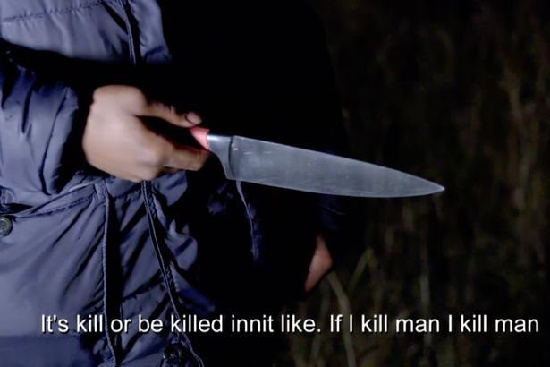

What is your stance on carrying knives?
Knife crime is on the ride over the last decade. With it risen by 10% across England and wales. More people are feeling the need to carry knives as a form of protection. However there, is a correlation between knife crime and a rise in violent crime, and murder rates of over 18%. With knife crime on the rise, we want to know your thoughts on ideas, on why people might carry knives, and do you think in our day of age we may need to carry knives as a form of defence.
Agree
So here’s some reasons why people carry knives; For protection, self-defence, in case they were ever attacked and needed to protect themselves. Another reason would be because they are cheap and easy to get hold of, as you could easily pick a knife from the kitchen. Being brought up in a household where carrying a knife is acceptable can impact people in a big way and carrying a knife to some people could become second nature.
Disagree
In fact, 7 out of 10 young people who end up in A&E with a knife injury have been stabbed with their own knife. Carrying a blade actually puts you at risk you. Your life is precious, and carrying a knife may put you more of risk. Knifes today are very easy to get a hold of which is one of the main reasons knife crime is on the rise and is causing way more harm on people’s lives rather than protecting them as some knife carriers may think.
Get Involved! Would you carry a knife
With knife crime being more prevalent then ever. We want you to get involved. Take part of our poll, by simply tapping agree. or disagree. Also send us your thoughts by tweeting us.